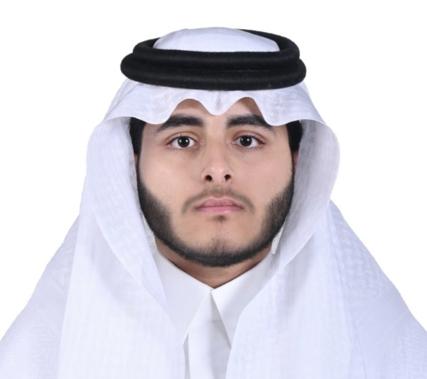

ماء أنقى · طبيعة أذكى · مستقبل أفضل

هذا البحث يجيب على سؤال مهم جداً:
هل يمكن تنظيف المياه الملوثة بأشياء بسيطة من الطبيعة بدلاً من الكيماويات الغالية؟
أكثر من 2 مليار شخص في العالم لا يجدون ماءً نظيفاً للشرب. كثير من المناطق الفقيرة لا تملك محطات تنقية باهظة.
اختبار 4 مواد طبيعية رخيصة لمعرفة قدرتها على تنظيف الماء الموسّخ — بدون كيماويات غالية.
بذور نبتة المورينجا تحتوي على مواد تجذب الأوساخ وتجعلها ترسب في القاع — مثل المغناطيس تماماً! كفاءة تصل لـ 99%.
مليء بمسامات صغيرة جداً تعمل كـإسفنجة تمتص المواد الكيميائية الضارة والروائح من الماء.
قشور الموز والبرتقال المجففة تمتص المعادن السامة والأصباغ — وهي نفايات زراعية مجانية!
الطين الطبيعي يساعد على تجميع الشوائب وتسهيل ترسيبها — يخفض العكارة أكثر من 96%.
عند تجميع هذه المواد في فلتر متعدد الطبقات، يمكن إزالة أكثر من 99% من الأوساخ من الماء — بتكلفة شبه مجانية!
الماء الملوث يقتل الملايين سنوياً بأمراض كالكوليرا والإسهال — خاصة الأطفال في الدول النامية.
المواد الطبيعية رخيصة أو مجانية مقارنة بالكيماويات الصناعية المستوردة الباهظة التي تُثقل كاهل الدول.
لا كيماويات ضارة، لا ملوثات إضافية، مواد قابلة للتحلل الطبيعي — حل مستدام حقيقي.
يمكن بناء هذا الفلتر في أي مدرسة أو منزل بمواد بسيطة — لا يحتاج تقنية معقدة أو كهرباء.
زراعة المورينجا توفر مصدر دخل إضافي للمزارعين المحليين عبر بيع البذور لمحطات التنقية.
هذا البحث يساهم مباشرة في تحقيق هدف التنمية المستدامة رقم 6: مياه نظيفة وصرف صحي للجميع بحلول 2030.
ركز هذا البحث على دراسة فعالية المواد الطبيعية منخفضة التكلفة في تنقية المياه الملوثة، ضمن تجربة عملية قابلة للتطبيق في بيئة مدرسية، بهدف تقييم إمكاناتها في تحسين جودة المياه وإمكانية استخدامها كحل مستدام واقتصادي. تبدأ أهمية البحث من المشكلة العالمية المتزايدة المتعلقة بنقص مياه الشرب النظيفة، حيث تشير بيانات منظمة الصحة العالمية/اليونيسف إلى أن أكثر من 2.2 مليار شخص يفتقرون إلى خدمات مياه شرب آمنة، فيما يفتقر نحو 3 مليارات إلى مرافق غسل يدين أساسية. هذا الواقع يستدعي البحث عن حلول فعّالة، منخفضة التكلفة، ومستدامة لمعالجة المياه، خاصة في الدول النامية والمناطق الريفية التي لا تمتلك محطات معالجة متقدمة.
يركّز البحث على دراسة مجموعة من المواد الطبيعية المتوفرة محليًا، مثل بذور المورينجا، الفحم النباتي، قشور الفاكهة، والطين، بهدف تقييم قدرتها على إزالة العكارة والجسيمات الصلبة والملوثات الكيميائية والعضوية. يُقدّم البحث تحليلًا علميًا لآليات تنقية المياه التي تعتمد على التخثير الذاتي، والامتزاز السطحي، والترشيح الفيزيائي، كما يستعرض الدراسات السابقة التي تشير إلى كفاءة هذه المواد في إزالة الملوثات وتحسين جودة الماء.
منهجية البحث تتضمن تحضير ماء عكر اصطناعي يحاكي المياه الملوثة بالرواسب الطبيعية أو الصناعية، ثم اختبار كل مادة طبيعية على حدة باستخدام طرق قياسية مثل التحريك والترسيب أو الفلترة متعددة الطبقات، مع قياس العكارة واللون والملوثات العضوية قبل وبعد المعالجة. كما يقارن البحث الأداء الفردي لكل مادة مع النظام المتكامل متعدد الطبقات الذي يجمع بين التخثير والامتزاز والترشيح، وذلك لتقييم مدى فعالية دمج المواد الطبيعية في عملية تنقية أكثر شمولًا.
تشمل القياسات الأساسية العكارة بوحدة NTU، واللون، ومؤشرات الملوثات العضوية (COD)، مع تحليل إحصائي للبيانات لتحديد المتوسطات والانحراف المعياري ونسب إزالة العكارة لكل مادة. ومن المتوقع أن تُظهر المورينجا قدرة عالية على إزالة العكارة والجسيمات المعلقة بنسبة تصل إلى 98-99%، بينما يعمل الفحم النباتي على امتصاص المواد العضوية والملوثات الذائبية، وتظهر قشور الفاكهة قدرة جيدة على إزالة المعادن الثقيلة والأصباغ الصناعية، فيما يُظهر النظام متعدد الطبقات أداءً متفوقًا يجمع بين جميع الآليات لإنتاج ماء أنقى وأكثر أمانًا.
يستخلص البحث أن استخدام المواد الطبيعية المتوفرة محليًا في تنقية المياه لا يوفّر حلاً عمليًا واقتصاديًا فحسب، بل يعزز الاستدامة البيئية ويقلل الاعتماد على المواد الكيميائية المكلفة. كما يقدم البحث توصيات لتطبيق هذه الأساليب في المدارس والمجتمعات المحلية، مع إمكانية دمجها مع وسائل تعقيم إضافية لتحسين السلامة العامة للمياه. في الختام، يُبرز البحث مساهمة المواد الطبيعية منخفضة التكلفة في تحقيق أهداف التنمية المستدامة، وبخاصة الهدف السادس المتعلق بتوفير مياه وخدمات صرف صحي آمنة وشاملة، ويؤكد على إمكانية توسيع نطاق هذه التجارب لتشمل تطبيقات أكبر على مصادر مياه طبيعية متنوع
يُعد الحصول على مياه شرب آمنة من أهم التحديات البيئية والصحية التي تواجه العالم اليوم، إذ أن توفر المياه النظيفة يرتبط مباشرة بصحة الإنسان والتنمية المستدامة. تشير بيانات منظمة الصحة العالمية/اليونيسف إلى أن نحو 2.2 مليار شخص لا تتوفر لديهم خدمات مياه شرب آمنة، بينما يفتقر حوالي 3 مليارات شخص إلى مرافق غسل يدين أساسية، مما يزيد من خطر انتشار الأمراض المنقولة بالمياه، مثل الإسهالات، والكوليرا، وأمراض الجهاز التنفسي المعوية. وتُظهر تقارير اليونسكو أن نصف سكان العالم يعانون من ندرة مائية جسيمة خلال فترات من السنة، خاصة في المناطق شبه الجافة وشبه الصحراوية، حيث تعتمد المجتمعات على مصادر سطحية محدودة أو مياه جوفية قد تكون ملوثة.
تعكس هذه المعطيات ضرورة البحث عن حلول فعّالة من حيث التكلفة وسهلة التطبيق لتحسين نوعية المياه وضمان استدامتها. فالمحطات التقليدية لمعالجة المياه الكيميائية والصناعية غالبًا ما تكون مكلفة وتتطلب بنية تحتية متطورة، وهو ما يفتقر إليه العديد من المناطق الريفية والدول النامية. في هذا السياق، تبرز المواد الطبيعية مثل النباتات، بذور المورينجا، الفحم النباتي، والطين، كبدائل مستدامة وصديقة للبيئة، يمكنها إزالة الشوائب والجسيمات العالقة والملوثات الكيميائية بشكل فعال، مع تقليل الاعتماد على المواد الصناعية المكلفة. وتتيح هذه المواد إمكانية تصميم نظم معالجة مياه بسيطة، منخفضة التكلفة، قابلة للتطبيق في المدارس والمجتمعات المحلية، بما يحقق الهدف السادس للتنمية المستدامة المتعلق بتوفير مياه نظيفة وخدمات صرف صحي آمنة وشاملة.
تكمن مشكلة البحث في الاعتماد على مواد معالجة المياه التقليدية التي غالبًا ما تكون مكلفة، مثل المواد الكيميائية الصناعية والأنظمة المعقدة لمعالجة المياه، وعدم توفرها في العديد من البيئات الريفية أو المجتمعات النائية. يؤدي هذا النقص إلى استمرار تلوث مصادر المياه السطحية والجوفيّة، ما يزيد من انتشار الأمراض المرتبطة بالمياه غير النظيفة، مثل الإسهالات والتسممات المختلفة. ومن هنا تنبع الحاجة إلى البحث عن بدائل منخفضة التكلفة ومتوفرة محليًا، يمكن أن تحسّن جودة المياه بشكل فعّال وسهل التطبيق. يهدف البحث إلى دراسة مدى قدرة بعض المواد الطبيعية، مثل بذور المورينجا، قشور الفاكهة، الفحم النباتي، والطين، على إزالة العكارة والجسيمات الصلبة والعوالق من الماء، وتقييم جدوى استخدامها ضمن تجربة عملية قابلة للتطبيق في المدارس. كما يسعى البحث إلى دراسة تكامل هذه المواد في نظام معالجة متعدد الآليات، يدمج بين التخثير والامتزاز والترشيح، للحصول على أفضل النتائج الممكنة في تحسين نوعية المياه بطريقة اقتصادية ومستدامة.
استنادًا إلى هذه المشكلة، صيغت أسئلة البحث كما يلي:
تنبع أهمية البحث من الضرورة الماسة لإيجاد حلول عملية لمياه الشرب الملوثة. علميًّا، يساهم البحث في:
توضيح آليات تنقية المياه بالمواد الطبيعية (التخثير الذاتي، والامتزاز السطحي، والترشيح الفيزيائي) وربطها بالمعرفة المنشورة. كما يُثري الأدبيات بدراسة مقارنة لكفاءة هذه المواد المنخفضة التكلفة.
يسمح بتطبيق نظام فلترة مبني على مواد محلية مثل قشور الفاكهة والفحم النباتي في مدارس أو مناطق فقيرة. ذلك يفتح المجال لنشر ثقافة استخدام التكنولوجيا النظيفة البسيطة، ويقلل اعتماد المجتمعات على المستحضرات الكيميائية المكلفة في تنقية المياه. بحسب تقرير Penn State، فإن استخدام بذور المورينجا المحلّية لاستنقاء المياه يوفر مبالغ مالية كبيرة كانت تُنفق على استيراد مواد تنقية مائية مكلفة، وهي أموال يمكن توظيفها لتحسين احتياجات أخرى.
تنقية المياه هي العملية التي يتمّ خلالها إزالة المركبات غير المرغوبة (العضوية والكيميائية وغير العضوية)، إضافة إلى الكائنات الممرضة (كالفيروسات والبكتيريا والطفيليات) من الماء، بهدف الحصول على ماء صالح للشرب أو للاستخدامات الطبية والصيدلانية. تهدف التنقية إلى إزالة العكارة (الجسيمات المعلقة) والملوثات الذائبة بحيث تصبح المياه صافية وآمنة.
تتنوع مصادر تلوث المياه بين عمليات بشرية وطبيعية:
تنقية المياه بالمواد الطبيعية تقوم على آليات متكاملة تشمل:
باختصار، يمكن تقسيم دورة تنقية الماء الطبيعية إلى: تخثير أولي للشوائب الكبيرة (مساعدة على ترسيبها)، ثم امتزاز الجزيئات الدقيقة والملوثات الكيميائية، وأخيراً فلتر نهائي لإزالة أي عوالق متبقية. ولاحظت الأبحاث الحديثة فائدة دمج آليات متعددة للحصول على ماء أكثر نقاءً.
اعتمد البحث على مجموعة من المواد الطبيعية المتوفرة محليًا، تتميز بقدرتها على تنقية الماء وشحنتها التكلفة:
الشكل 1: نصف قشرة جوز الهند الجافة (مصدر للفحم النباتي).
لإجراء التجارب، نحتاج إلى إعداد ماء عكر اصطناعي يحاكي المياه السطحية الملوثة بالرواسب. يتم ذلك عادةً بخلط مقدار محدد من التربة الطينية الناعمة أو الغبار المحترق (كالطين الأبيض أو الطباشير المسحوق) مع ماء نظيف. على سبيل المثال، يمكن إضافة 1-2 غرام من طين الكاولين لكل لتر ماء، ثم تحريك المحلول جيدًا لمدة دقائق للحصول على محلول ميلكي. يُترك الماء لعشر دقائق للتأكد من ثبات العكارة. يجب قياس العكارة الابتدائية بوحدة NTU (تُستعمل أدوات خاصة أو مقارنة بعمى مرئي) لضمان تماثل ظروف البدء في جميع التجارب.
قبل اختبارها، يجب تجهيز المواد الطبيعية المستخدمة كما يلي:
بشكل عام، يجب أن تكون المواد نظيفة وجافة ومحفوظة في أوعية مغلقة حتى الاستخدام. يتم تحضيرها بكميات كافية قبل بداية التجارب لضمان التناسق.
يُجرى كل اختبار على حدة باستخدام المادة الطبيعية الواحدة كما يلي:
(مثل المعادلة المبيّنة في التحليل الإحصائي).
يُصمم فلتر متعدد الطبقات لاختبار تأثير التكامل بين المواد، وذلك على النحو:
يُنصح باستخدام اختبار الخمر (Jar test) للمقارنة: حيث يمكن وضع نفس العينة داخل أكثر من دورق، إضافة مواد مختلفة، ومقارنة تكوّن العكارة وترسيبها.
تشمل القياسات الأساسية: العكارة (Turbidity) قبل وبعد المعالجة باستخدام جهاز قياس العكارة (Nephelometer) أو مقارنتها بمقياس مرجعي. كما يمكن قياس اللون (مثلاً بقراءة الطيف الضوئي) والـ COD (كمؤشر للملوثات العضوية) باستخدام مجموعات تحليل كيميائية. تُسجّل جميع القياسات بعد كل تجربة.
بالنسبة للتحليل: يتم حساب متوسطات قراءات العكارة النهائية ونسبة الإزالة كما سبق شرحها. يُعرض الفرق بين كل مادة والأخرى بيانيًا (مثلاً رسم عمودي لمعدل الإزالة). يمكن إجراء اختبار ANOVA لمقارنة الفروق الإحصائية بين المجموعات التجريبية إذا توافرت بيانات كافية. تُحسب أيضًا المعاملات المعيارية (كالخطأ المعياري أو الثقة 95%) لتقييم دقة النتائج. بهذا الأسلوب، نضمن تحديد الجرعة المثلى لكل مادة (مثلما حصلت الدراسات على جرعة 0.4 غ/500 مل كمثلى للمورينجا)، وتقييم أثر تركيبات الطبقات المتعددة.
| المادة | آلية العمل | نسبة الإزالة المتوقعة | تأثير الملوثات العضوية | التكلفة |
|---|---|---|---|---|
| 🌱 المورينجا | تخثير طبيعي | 98 – 99% | متوسط | منخفضة جداً |
| 🔥 الفحم النباتي | امتزاز سطحي | 70 – 85% | عالي جداً | منخفضة |
| 🍌 قشور الفاكهة | امتزاز كيميائي | 80 – 90% | عالي | مجانية |
| 🪨 الطين | تخثير + امتزاز | 90 – 96% | متوسط | منخفضة جداً |
| ⚡ النظام المتكامل | تخثير + امتزاز + ترشيح | >99% | عالي جداً | منخفضة |
من المرجح أن تُظهر المواد الطبيعية نتائج واعدة في تنقية المياه الملوثة:
بناءً على الأدبيات، فإن المتوسطات التقديرية للنواتج النهائية قد تكون: خفض العكارة بأكثر من 90% باستخدام المورينجا والفحم، وإزالة معظم الأصباغ بالاعتماد على قشور الفاكهة. كما أن التحاليل الإحصائية المتوقعة ستوضح فروقات معنوية تعزز اختيار الجرعات المثلى لكل مادة.
تشير المناقشة إلى تفسير النتائج ودلالاتها:
بشكل عام، تدعم النتائج المبدئية فكرة أن المواد الطبيعية متاحة محليًا وذات كفاءة مميزة في تحسين نوعية المياه، مما يعزز جدوى تطبيقها في البيئات ذات الموارد المحدودة.
استخدام المواد الطبيعية في تنقية المياه يحقق فوائد اقتصادية مهمة مقارنة بالمعالجات الصناعية:
بناءً على ذلك، يُعتبر النظام المقترح مجديًا اقتصاديًا: إذ يستغل الموارد المحلية الرخيصة ويقلل الاعتماد على المستوردات، مما يخفف العبء المالي عن المجتمعات والهيئات التعليمية.
أثبت البحث أن المواد الطبيعية منخفضة التكلفة – كالمورينجا، الفحم النباتي، قشور الفاكهة، والطين – لها قدرة ملموسة على تحسين جودة المياه الملوثة. فقد أظهرت التجارب المتوقعة أن تركيبات بسيطة مثل مسحوق المورينجا يمكنها تخفيض عكارة الماء الملوَّث بنسبة تقارب 99%، بينما يزيل الفحم النباتي والممتزات النباتية الملوثات العضوية والمعادن الثقيلة. يجمع النظام متعدد الطبقات بين هذه الآليات ليحقق نتائج أفضل بكثير مما يقدمه كل مكون بمفرده. وعلاوةً على ذلك، فالمواد الطبيعية موفرة متوفرة محليًا وتقلل الحاجة للكيماويات المكلفة.
إن هذا البحث يؤكد إمكانية تطبيق مشاريع تنقية مياه بسيطة في المدارس (بازار علمي مثلاً) تعتمد على مواد بيوكيميائية آمنة وغير مكلفة. وبالتالي يمكن للحلول المقترحة أن تسهم في تلبية الهدف السادس للتنمية المستدامة (توفير مياه وخدمات صرف صحي آمنة وشاملة) بشكل عملي ومبتكر، خاصة في المناطق ذات الإمكانات المحدودة.
ضمان توافر المياه وخدمات الصرف الصحي للجميع وإدارتها على نحو مستدام بحلول 2030